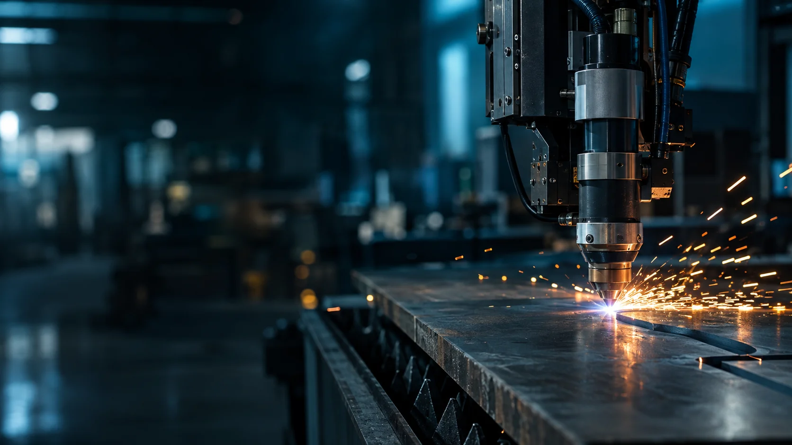

Understand the application
Tell us what the equipment or component needs to do, and where it will work.

ENGINEERING PURPOSE. MANUFACTURING POSSIBILITY.
From the fields we cultivate to the machines that move us. Practical manufacturing. Precision in every part.
Explore our solutions ↗THIS IS NAVEEN MACHINERIES
We manufacture and supply equipment for agriculture, construction, and industry. From tractor implements and earth block machinery to custom-cut aluminium components, our work starts with what you need to achieve.
Bringing fabrication, precision machining, and hydraulic work together, we help turn your requirements into equipment and components built for the job.
Get to know our capabilities ↗WHAT WE MAKE
Purpose-built equipment and precision components.
Explore where we can make a difference.
Showing all 4 solution areas
OUR MANUFACTURING CAPABILITIES
Cutting, turning, and shaping. Our machining capabilities support both complete equipment and individual custom components.
Profile cutting for fabricated metal parts and machinery components. Share your drawing, material, and thickness to discuss the right approach.
Wire electrical discharge machining for detailed profiles and precision shapes in electrically conductive materials. Requirements are reviewed against the part geometry and material.
Lathe machining for turned components, shafts, and cylindrical parts. Our equipment includes an SB-28Y box-way lathe; discuss your drawing and machining needs with us.
YOUR REQUIREMENT. OUR STARTING POINT.
Whether you need a complete machine or a custom component,
let’s start with the details that matter.
Tell us what the equipment or component needs to do, and where it will work.
Share drawings, dimensions, materials, quantities, and your target timeline.
Review the manufacturing approach and confirm the scope before moving forward.
CAREERS AT NAVEEN MACHINERIES
Interested in hands-on manufacturing? Our work brings together machining, fabrication, machine assembly, and hydraulic applications.
Explore this space for future role details and application instructions. Vacancy information and a recruitment contact will be added here when available.
LET’S BUILD SOMETHING THAT WORKS.
Need an implement, a custom machine, or a precision part?
Put your requirements together to start the conversation.
Business email, phone, and workshop address will be added here.